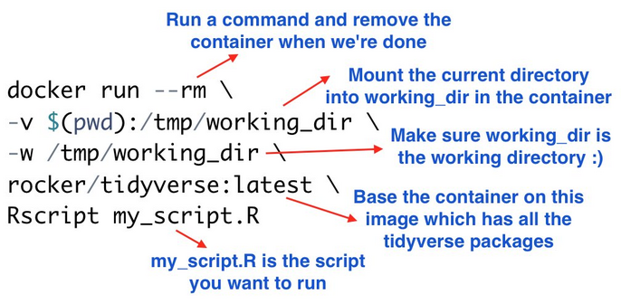

Misc
Docs
- Command Reference for CLI, dockerfiles, etc.
Resources
Commands
docker history --no-trunc <image>shows image hash, date created, command used to create the image, size, comments
Images
- python:3.9-slim-bullseye
- Non-bulky python base image
- Dont use python alpine. Youll need to install all sorts of dependencies for the simplest libraries. jAlso, alpine versions of common libraries are sometimes horribly outdated.
- python:3.9-slim-bullseye
One-liner to run a R script
- For someone that doesnt have R but has Docker
ADD from a github repo
- See COPY things (e.g. executables) from an image in a registry (below) for a mention about this not interacting with cache correctly
COPY things (e.g. executables) from an image in a registry (Thread)
- Also see Multi-Stage Dockerfile >> Stage 2
- Unlike ADD https:// or RUN wget https:// this interacts correctly with caching, both not downloading anything unless necessary *and* updating always when necessary.
- Use Cases
- use it for installing python wheels and deb packages from private images in ECR on top of a FastAPI Dockerfile without needing private repositories for them.
- a nice way to fetch external dependencies. Eg. Instead of downloading the tool with curl, copy it from the official image. This can also allow tools like dependabot to monitor upstream for updates and bump the tag in your dockerfile in a PR when a new release drops.
AWS Elastic Beanstalk automatically handles things like capacity provisioning, load balancing, auto-scaling and application health monitoring. AWS Elastic Beanstalk itself uses EC2 instances for running your application and S3 storage for storing data, but you as a user dont have to bother with these things. You can simply upload your Docker image and AWS Elastic Beanstalk handles the remaining stuff for you.
A docker-compose.yml file is used by AWS Elastic Beanstalk to create and run the Docker container and has to be placed in the same directory as the Dockerfile
version: '3' services: deploy: build: context: . dockerfile: Dockerfile ports: - '80:5000'- Port 80 is mapped to the port 5000 of the container. This is due to the reason that the webpage, which then will be hosted on AWS Elastic Beanstalk, listens to incoming connections on port 80 per default and the created container listens on port 5000.
Requires you upload a zipped folder with the application and the Dockerfile.
Example: GH Action yml step
name: Generate Deployment Package run: zip -r deploy.zip *
Secure public images with Docker Content Trust (DCT)
- Article
- Gives you the ability to verify the integrity of the image you are using and the integrity of the publisher of that image
Use
RUN --mount type=cachefor dependency cachingExample: Node.js application
# Use an official Node base image FROM node:14 # Install dependencies first to leverage Docker cache COPY package.json package-lock.json ./ # Using cache mount for npm install, so unchanged packages arent downloaded every time RUN --mount=type=cache,target=/root/.npm \ npm install # Copy the rest of your app's source code COPY . . # Your app's start command CMD ["npm", "start"]
{kind=link}
{kind=link}
BuildKit
- Allows you to use external caching sources and build mounts to speed up image builds through caching (requires Docker version 18.09)
- Able to supply a previously built image in your registry where Docker will check the manifest of the image, and pull any layers that can be used as local cache.
- Notes from Fast Docker Builds With Caching
- Must have the environment variable,
DOCKER_BUILDKIT=1 - External Cache
Example: Single stage build
DOCKER_BUILDKIT=1 docker build \ --cache-from my-repo.com/my-image \ --build-arg BUILDKIT_INLINE_CACHE=1 \- Use
--build-arg BUILDKIT_INLINE_CACHE=1and--cache-fromarguments when building the image- my-repo.com/my-image is the url of the image you want Docker to pull dependencies (aka layers) that can be used as a local cache
- Use
Example: Multi-Stage
export DOCKER_BUILDKIT=1 IMAGE=my-repo.com/my-image # Build image for the build stage docker build \ --target build-stage \ --cache-from "${IMAGE}:build-stage" \ --tag "${IMAGE}:build-stage" \ --build-arg BUILDKIT_INLINE_CACHE=1 \ . # Build the final image docker build \ --cache-from "${IMAGE_NAME}:build-stage" \ --cache-from "${IMAGE_NAME}:latest" \ --tag "${IMAGE_NAME}:latest" \ --build-arg BUILDKIT_INLINE_CACHE=1 \ . # Push the build-stage image too so that it can be reused for cache docker push "${IMAGE_NAME}:build-stage" docker push "${IMAGE_NAME}:latest"- This shell script that gets referenced in the docker file (another example in this note; search for shell script)
- export creates the environment variable; IMAGE is a variable storing the URL of the externally cached image
--targetin the first build command to stop at the build-stage stage, and that- The second build command referenced both the build-stage and latest images as cache sources
- Build Mounts
- This type of caching is only available:
- Locally and cannot be reused across machines
- During a single RUN instruction, so you need to either:
- Copy the files to a different location in the image before the RUN instruction finishes (e.g., with cp) or
- COPY the cache directory from another image, e.g., a previously built build-stage image.
- See the article for an example
- This type of caching is only available:
- Credentials
- Steps
Prepare an auth.toml file with your credentials
Example: {{poetry}} credentials for installing deps from a private repo)
[http-basic] [http-basic.my_repo] username = "my_username" password = "my_ephemeral_password"
Place it outside of your Docker context or exclude it in .dockerignore (the cache would still get invalidated otherwise).
Update your Dockerfile to include # syntax=docker/dockerfile:1.3 as the very first line
Adjust install commands that require the credentials (e.g. poetry install command becomes:)
RUN --mount=type=secret,id=auth,target=/root/.config/pypoetry/auth.toml \ poetry install --no-dev --no-interaction --remove-untrackedBuild the image with
docker build --secret id=auth,src=auth.toml ...
- Steps
Multi-Stage Dockerfile
Misc
- With multi-stage builds, you compile and build everything in an initial stage, and then, in a separate stage, you copy over just the necessary artifacts. This results in a much leaner, more efficient final image. Its not only good practice for keeping image sizes down, but it also means quicker deployments and reduced storage costs.
- The bigger the image size, the longer the run time and the higher the runtime cost
- Going to multi-stage can drastically reduce image size (e.g. 65%)
- You should consider moving your build to a multi-stage build when the build-required dependencies are no longer needed after the build is completed
- Notes from
- With multi-stage builds, you compile and build everything in an initial stage, and then, in a separate stage, you copy over just the necessary artifacts. This results in a much leaner, more efficient final image. Its not only good practice for keeping image sizes down, but it also means quicker deployments and reduced storage costs.
-
- First Build - Installing the required decencies and building the binaries. This image is also called the builder image
- Second Build - Starting from a new base image and copying from the builder image binaries applications
- Attributes or settings from the first build are not inherited unless using specific commands or arguments such as the
-- from=builderargument.
- Attributes or settings from the first build are not inherited unless using specific commands or arguments such as the
Example: 2 Stages
FROM ubuntu:20.04 AS final FROM ubuntu:20.04 as build # BUNDLE LAYERS RUN apt-get update -y && apt install -y --no-install-recommends \ curl \ osmium-tool \ && rm -rf /var/lib/apt/lists/* RUN mkdir /osmfiles \ && mkdir /merged \ && curl http://download.geofabrik.de/europe/monaco-latest.osm.pbf -o /osmfiles/monaco.osm.pbf \ && curl http://download.geofabrik.de/europe/andorra-latest.osm.pbf -o /osmfiles/andorra.osm.pbf \ && osmium merge /osmfiles/monaco.osm.pbf /osmfiles/andorra.osm.pbf -o /merged/merged.osm.pbf FROM final RUN mkdir /merged COPY --from=build /merged /mergedStage 1: build
- Starts at
FROM ubuntu:20.04 as build - Downloads a couple geospatial files, then merges them and stores them in the merged folder
- Starts at
Stage 2: final
- Starts at
FROM final - Creates a merged dir and copies merged file from stage 1 (build) to the merged dir
- The curl and osmium-tool dependencies that are installed in Stage 1 are not included in Stage 2 which reduces the size of the final image.
- Starts at
Im not sure if
FROM ubuntu:20.04 AS finalbeing the first line (instead of replacing the FROM final line) is necessary or not. It looks kind of redundant.If a slimmer ubuntu image is used in the last stage, the size of the image can reduced further
Example: Python Development Environment
Dockerfile
# Stage I FROM python:3.10-slim AS builder ARG VENV_NAME="my_project" ENV VENV_NAME=$VENV_NAME RUN mkdir requirements COPY install_requirements.sh requirements/ COPY requirements.txt requirements/ RUN bash ./requirements/install_requirements.sh $VENV_NAME # Stage II FROM python:3.10-slim ARG VENV_NAME="my_project" ENV VENV_NAME=$VENV_NAME COPY --from=builder /opt/$VENV_NAME /opt/$VENV_NAME RUN echo "source /opt/$VENV_NAME/bin/activate" >> ~/.bashrc- See link to article in Note From section for more details
- Stage I:
- Define the first stage as the builder by adding
AS builderargument to theFROMcommand. - Import the
python:3.10image as the base image - Use an argument variable to set the virtual environment name
- Create a local folder and copy the helper files
install_requirements.shandrequirements.txtrequirements.txt- File defines the Python environment required libraries.install_requirements.sh- Bash script sets the virtual environment and installs the libraries from therequirements.txtfile.
- Set the virtual environment and install the required libraries
- Define the first stage as the builder by adding
- Stage II:
python:3.10-slimis the base image- Copy the Python virtual environment from the builder image using the
COPYcommand with thefrom=builderargument.- Need to update the .bashrc file (See CLI, Linux >> Misc) and set it up again as the default virtual environment. Alternatively, you can copy the .bashrc file from the builder as the
install_requirements.shfile did it on the builder image in Stage I.
- Need to update the .bashrc file (See CLI, Linux >> Misc) and set it up again as the default virtual environment. Alternatively, you can copy the .bashrc file from the builder as the
Build Image
build_docker.sh Dockerfile.multi-stage rkrispin/python-multi-stage:3.10build_docker.sh- Bash script that runs docker build command. Also has parameters for you to set the dockerfile name and the image name.- Builds the
Dockerfile.multi-stageDockerfile and names it asrkrispin/python-multi-stage:3.10
{kind=link}
Optimizations
- Resources
- Video: Dockerfile: From Start to Optimized (DockerCon 2023) - Best practices for setting up Dockerfile and optimizing the build.
- Optimize the Dockerfile
- Multi-stage build
- Setting testing
- Building for multiple platforms
- Video: Dockerfile: From Start to Optimized (DockerCon 2023) - Best practices for setting up Dockerfile and optimizing the build.